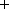

Working Papers
E. Wah and S. Feldman. 2018. "Gone in sixty seconds: The cost of trading in long queues."
[SSRN]
[IEX]

The maker-taker pricing model, which pays market participants a rebate for providing liquidity, can lead to long queues at the exchanges employing this fee structure. But some participants may be able to get better queue position than others: high-speed traders can buy speed and data advantages in order to join the queue immediately, whereas slower investor orders are relegated to the back of the line. We analyze publicly available Daily TAQ data to estimate the costs of trading near or at the end of a long queue. By using aggregate quoted size at trade time as a proxy for queue priority, we calculate the impact and scale of performance differences associated with trading in long lines, which our results suggest may impose significant costs on investors.
E. Wah. 2016. "How prevalent and profitable are latency arbitrage opportunities on U.S. stock exchanges?"
[SSRN]
Press:
Reuters,
Quartz
In this study, I examine the prevalence of latency arbitrage opportunities that arise due to the fragmentation of trading across multiple exchanges. I analyze order and quote data from the U.S. Securities and Exchange Commission's Market Information Data Analytics System (MIDAS), which aggregates consolidated feeds and direct proprietary feeds from each U.S. stock exchange. This paper provides evidence that high-frequency traders have numerous opportunities to realize profits from latency arbitrage. These opportunities are significantly more prevalent in larger stocks and on certain exchanges. I estimate that total potential profit from latency arbitrage opportunities in S&P 500 ticker symbols was approximately $3.03 billion in 2014.
Conference Publications
E. Wah, S. Lahaie, D. M. Pennock. 2016. "An empirical game-theoretic analysis of price discovery in prediction markets."
In 25th International Joint Conference on Artificial Intelligence, pages 510-516.
[pdf]
In this paper, we employ simulation-based methods to study the role of a market maker in improving price discovery in a prediction market. In our model, traders receive a lagged signal of a ground truth, which is based on real price data from prediction markets on NBA games in the 2014–2015 season. We employ empirical game-theoretic analysis to identify equilibria under different settings of market maker liquidity and spread. We study two settings: one in which traders only enter the market once, and one in which traders have the option to reenter to trade later. We evaluate welfare and the profits accrued by traders, and we characterize the conditions under which the market maker promotes price discovery in both settings.
E. Wah, D. R. Hurd, and M. P. Wellman. 2015. "Strategic market choice: Frequent call markets vs. continuous double auctions for fast and slow traders."
In Proceedings of the Third EAI Conference on Auctions, Market Mechanisms, and their Applications. EAI.
[pdf]
[appendix]
Frequent call markets have been proposed as a market design solution to the latency arms race perpetuated by high-frequency traders in continuous markets, but the path to widespread adoption of such markets is unclear. If such trading mechanisms were available, would anyone want to use them?
This is ultimately a question of market choice, thus we model it as a game of strategic market selection, where agents choose to participate in either a frequent call market or a continuous double auction. Our market environment is populated by fast and slow traders, who reenter to trade at different rates.
We employ empirical game-theoretic methods to determine the market types and trading strategies selected in equilibrium. We also analyze best-response patterns to characterize the frequent call market's basin of attraction. Our findings show that in equilibrium, welfare of slow traders is generally higher in the call market. We also find strong evidence of a predator-prey relation between fast and slow traders: the fast traders chase agents into either market, and slow traders under pursuit seek the protection of the frequent call market.
E. Wah and M. P. Wellman. 2015. "Welfare effects of market making in continuous double auctions."
In Proceedings of the 2015 International Conference on Autonomous Agents and Multiagent Systems, pages 57-66. IFAAMAS.
[ACM] [SRG]
[pdf]
[appendix]
Award: Pragnesh Jay Modi Best Student Paper
We investigate the effects of market making on market performance, focusing on allocative efficiency as well as gains from trade accrued by background traders. We employ empirical simulation-based methods to evaluate heuristic strategies for market makers as well as background investors in a variety of complex trading environments. Our market model incorporates private and common valuation elements, with dynamic fundamental value and asymmetric information. In this context, we compare the surplus achieved by background traders in strategic equilibrium, with and without a market maker. Our findings indicate that the presence of the market maker strongly tends to increase not only total surplus across a variety of environments, but also background-trader surplus in thin markets with impatient investors, with urgency captured by a limited trading horizon. Comparison across environments reveals factors that influence the existence and magnitude of benefits provided by the market maker function.
E. Wah and M. P. Wellman. 2013. "Latency arbitrage, market fragmentation, and efficiency: A two-market model."
In Proceedings of the 14th ACM Conference on Electronic Commerce, pages 855-872. ACM.
[ACM] [SRG]
[pdf]
Press:
The Guardian,
Michigan CSE,
Michigan Engineering,
TechCrunch,
Quartz,
Bloomberg,
HuffPost,
CNN Money,
ThinkProgress,
Die Zeit,
Reuters
We study the effect of latency arbitrage on allocative efficiency and liquidity in fragmented financial markets. We propose a simple model of latency arbitrage in which a single security is traded on two exchanges, with aggregate information available to regular traders only after some delay. An infinitely fast arbitrageur profits from market fragmentation by reaping the surplus when the two markets diverge due to this latency in cross-market communication.
We develop a discrete-event simulation system to capture this processing and information transfer delay, and using an agent-based approach, we simulate the interactions between high-frequency and zero-intelligence trading agents at the millisecond level.
We then evaluate allocative efficiency and market liquidity arising from the simulated order streams, and we find that market fragmentation and the presence of a latency arbitrageur reduces total surplus and negatively impacts liquidity. By replacing continuous-time markets with periodic call markets, we eliminate latency arbitrage opportunities and achieve further efficiency gains through the aggregation of orders over short time periods.
E. Wah, Y. Mei, and B. W. Wah. 2011.
"Portfolio optimization through data conditioning and aggregation." In Proceedings of the 23rd IEEE International Conference on Tools with Artificial Intelligence, pages 253-260. IEEE.
[IEEE Xplore]
In this paper, we present a novel portfolio optimization method that aims to generalize the delta changes of future returns, based on historical delta changes of returns learned in a past window of time. Our method addresses two issues in portfolio optimization. First, we observe that daily returns of stock prices are very noisy and often non-stationary and dependent. In addition, they do not follow certain well-defined distribution functions, such as the Gaussian distribution. To address this issue, we first aggregate the return values over a multi-day period into an average return in order to reduce the noise of daily returns. We further propose a pre-selection scheme based on stationarity, normality and independence tests in order to select a subset of stocks that have promising statistical properties. Second, we have found that optimizing the average risk in a past window does not typically generalize to future returns with minimal risks. To this end, we develop a portfolio optimization method that uses the delta changes of aggregated returns in a past window to optimize the delta changes of future expected returns. Our experimental studies show that data conditioning and aggregation in our proposed method is an effective means of improving the generalizability while simultaneously minimizing the risk of the portfolio.
Journal Publications
E. Wah, M. Wright, and M. P. Wellman. 2017. "Welfare effects of market making in continuous double auctions."
Journal of Artificial Intelligence Research, 59:613-650.
[JAIR]
[pdf]
We investigate the effects of market making on market performance, focusing on allocative efficiency as well as gains from trade accrued by background traders. We employ empirical simulation-based methods to evaluate heuristic strategies for market makers as well as background investors in a variety of complex trading environments. Our market model incorporates private and common valuation elements, with dynamic fundamental value and asymmetric information. In this context, we compare the surplus achieved by background traders in strategic equilibrium, with and without a market maker. Our findings indicate that the presence of the market maker strongly tends to increase total welfare across various environments. Market-maker profit may or may not exceed the welfare gain, thus the effect on background-investor surplus is ambiguous. We find that market making tends to benefit investors in relatively thin markets, and situations where background traders are impatient, due to limited trading opportunities. The presence of additional market makers increases these benefits, as competition drives the market makers to provide liquidity at lower price spreads. A thorough sensitivity analysis indicates that these results are robust to reasonable changes in model parameters.
M. P. Wellman and E. Wah. 2017. "Strategic agent-based modeling of financial markets."
The Russell Sage Foundation Journal of the Social Sciences, 3(1):104-119.
[RSF]
[pdf]
Understanding the implications of algorithmic trading calls for modeling financial markets at a level of fidelity that often precludes analytic solution. We describe how agent-based simulation modeling can be combined with game-theoretic reasoning to examine the effects of market variables on outcomes of interest. The approach is illustrated in a basic model where investors trade a single security through a continuous double auction mechanism. Our results demonstrate the feasibility of the approach, and raise questions about the use of spreads as a proxy for trading cost and welfare.
E. Wah and M. P. Wellman. 2016. "Latency arbitrage in fragmented markets: A strategic agent-based analysis."
Algorithmic Finance, 5(3-4):69-93.
[IOS Press]
[pdf]
We study the effect of latency arbitrage on allocative efficiency and liquidity in fragmented financial markets. We employ a simple model of latency arbitrage in which a single security is traded on two exchanges, with price quotes available to regular traders only after some delay. An infinitely fast arbitrageur reaps profits when the two markets diverge due to this latency in cross-market communication. Using an agent-based approach, we simulate interactions between high-frequency and zero-intelligence trading agents. From simulation data over a large space of strategy combinations, we estimate game models and compute strategic equilibria in a variety of market environments. We then evaluate allocative efficiency and market liquidity in equilibrium, and we find that market fragmentation and the presence of a latency arbitrageur reduces total surplus and negatively impacts liquidity. By replacing continuous-time markets with periodic call markets, we eliminate latency arbitrage opportunities and achieve further efficiency gains through the aggregation of orders over short time periods.
Book Chapters
E. Wah, S. Feldman, F. Chung, A. Bishop, D. Aisen. 2019. "A comparison of execution quality across U.S. stock exchanges." In
Global Algorithmic Capital Markets, chapter 5. Oxford University Press.
[OUP]
[IEX]
Theses
E. Wah. 2016. Computational models of algorithmic trading in financial markets. PhD Dissertation. University of Michigan, Ann Arbor. [pdf]
E. Wah. 2010. Portfolio optimization through data conditioning and aggregation. Master's thesis. University of California, Los Angeles.
Posters
E. Wah, E. Johnson, L. Auvil, U. Thakkar, W.-M. Hwu, D. Kirk, T. H. Dunning, and S. C. Glotzer. 2008. "Visualization and analysis of GPU Summer School applicants and participants." In Fourth IEEE International Conference on eScience, pages 362-363. IEEE.
As part of its graduate education component, the Virtual School of Computational Science and Engineering held a summer school in August 2008 entitled "Accelerators for Science and Engineering Applications," providing participants with knowledge and hands-on experience with graphics processing units (GPUs). In this paper, we present visualizations exploring the broad spectrum of summer school applicants and participants, demonstrating the wide range of fields of study where research applications can be readily accelerated through the use of massively parallel computing resources.
E. Johnson and E. Wah. 2008. "Data visualization and analysis of CIC graduate student TeraGrid resource usage." In Fourth IEEE International Conference on eScience, pages 354-355. IEEE.
The computing resources of the TeraGrid are a powerful tool for research by graduate students throughout the world. By analyzing the usage of the TeraGrid by a sample of 876 graduate students from the institutions that form the Committee on Institutional Cooperation, we discover interesting patterns about the research done by graduate students on the TeraGrid and the resources they use.